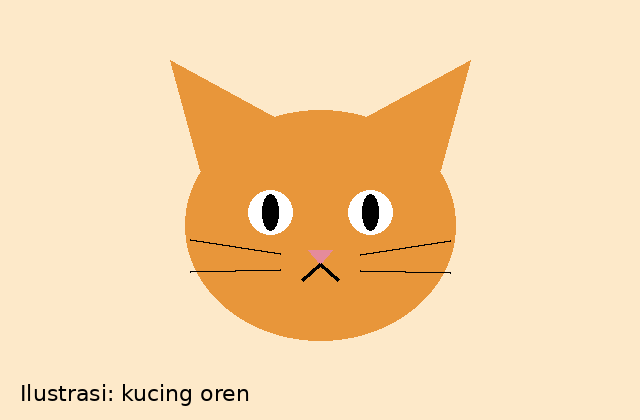

Tentang Website Ini
Setiap hari kita bertemu kucing jalanan di pasar, kampus, dan gang rumah. Banyak dari mereka kelaparan, sakit, atau tidak punya tempat berteduh. Website ini berisi panduan dasar merawat kucing jalanan serta formulir untuk melaporkan kucing yang membutuhkan pertolongan.

Mengapa Kucing Jalanan Perlu Dibantu?
Tantangan yang dihadapi
- Sulit mendapat makanan dan air bersih
- Rentan penyakit dan kutu
- Terancam kendaraan dan cuaca ekstrem
- Populasi tidak terkendali karena belum steril
Langkah awal yang bisa dilakukan siapa saja
- Sediakan air bersih dan makanan kucing secara rutin
- Buat tempat berteduh sederhana dari kardus atau keranjang
- Laporkan kucing yang sakit lewat halaman Lapor Kucing
- Ajak tetangga ikut peduli
Peta Situs
Berikut ringkasan isi tiap halaman pada website ini.
| Halaman | File | Isi Utama |
|---|---|---|
| Beranda | index.html | Pengenalan dan peta situs |
| Panduan Perawatan | perawatan.html | Makanan, kesehatan, dan jadwal vaksin |
| Lapor Kucing | lapor.html | Formulir laporan kucing yang butuh pertolongan |